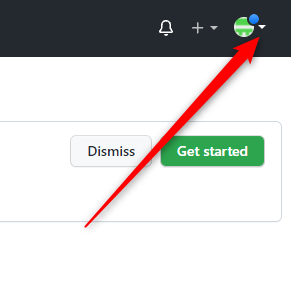
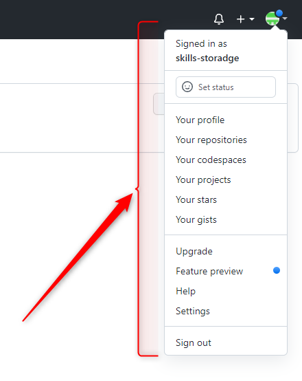

Я не знаю (прямо сейчас), как назвать эту кнопку, поэтому назвал ее – Самая главная кнопка.
Кнопка эта содержит все оставшиеся основные функции, которые не были описаны ранее.
Можно сказать, что это и есть
главное меню сайта GitHub
У нее так же, как и у кнопки «Add New», есть иконка треугольника:
что говорит нам о том, что отдельной страницы у этой кнопки нет, но зато есть всплывающее меню, которое даст нам очень много функций. И в случае с «Самой главной кнопкой» – функций действительно много. Да что я вам рассказываю! Нажмите и посмотрите сами:
И открыв такое огромное меню, мы снова должны вспомнить, что основная цель данного упражнения – «просто пялиться в кнопки главного меню». Но, с другой стороны, надо же хоть и что-то полезное из упражнения вынести! Поэтому из всего обилия функций главной кнопки, мы воспользуемся двумя:
НАПИШИ АБЗАЦ, КАК НАЗВАТЬ КНОПКУ! ТИПА – Меню аккаунта или меню профиля...
Ну все, погнали выходить из аккаунта.